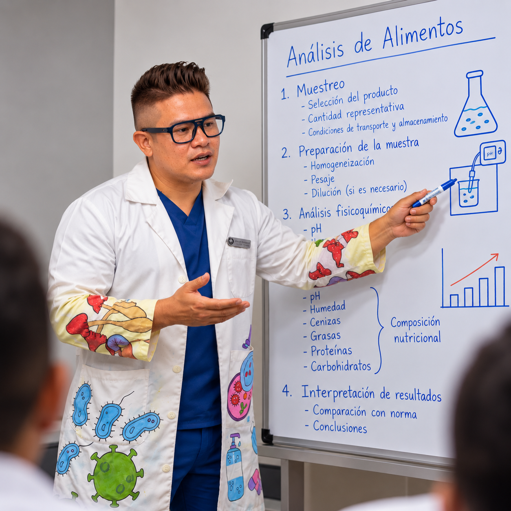

Manipulación de alimentos
Higiene alimentaria, prácticas seguras y medidas para reducir riesgos durante la elaboración, almacenamiento y distribución.
Formación para equipos
Temas para equipos que trabajan con alimentos, agua y procesos de calidad. El contenido y la modalidad se pueden definir según las necesidades de cada organización.

Higiene alimentaria, prácticas seguras y medidas para reducir riesgos durante la elaboración, almacenamiento y distribución.
Principios de higiene y control aplicados a las operaciones y espacios donde se procesan alimentos.
Fundamentos del sistema de análisis de peligros y puntos críticos de control, articulados con los programas prerrequisito.
Identificación de causas, gestión de planes de acción y seguimiento de oportunidades de mejora.
Conceptos y aplicación de requisitos para organizar la gestión de inocuidad en la cadena alimentaria.
Principios de gestión de calidad, enfoque por procesos y mejora continua.
Microorganismos asociados, vigilancia, investigación de campo, análisis de variables y elaboración de informes.
Temarios definidos a partir del sector, el equipo participante, los objetivos y los procesos de la organización.
Los temas, la modalidad y la disponibilidad se confirman con BIOS antes de programar la capacitación.